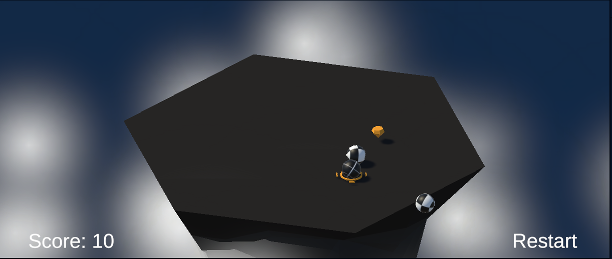
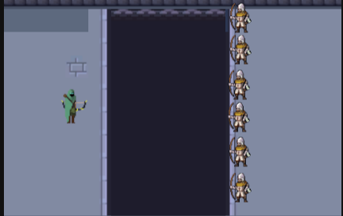
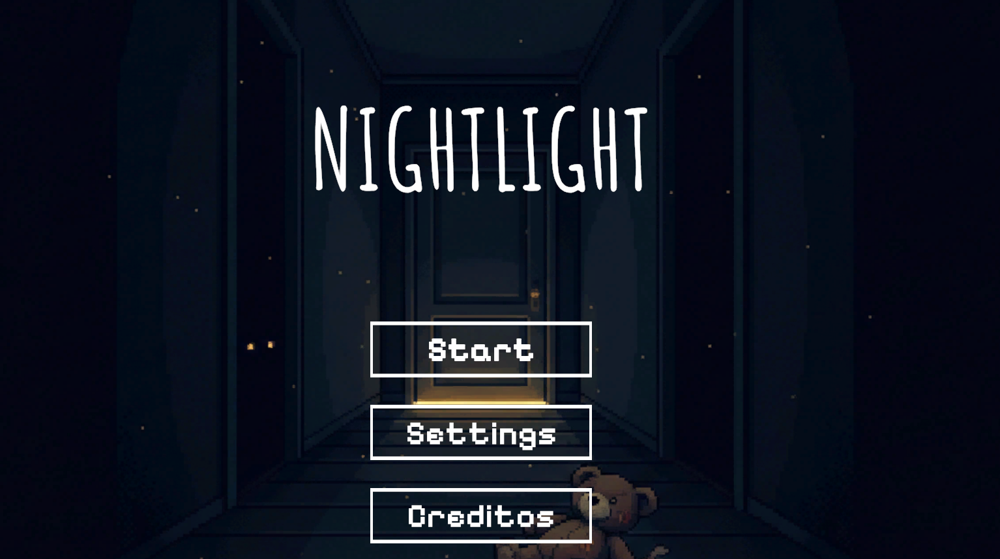
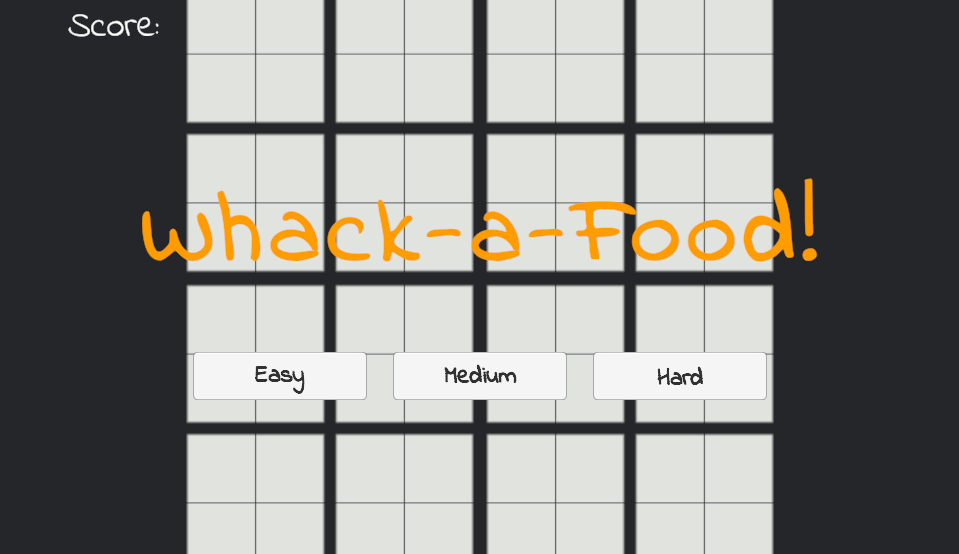

Desarrollo experiencias interactivas combinando diseño, lógica y tecnología.
Desarrollador de videojuegos enfocado en la creación de experiencias interactivas utilizando Unity y C#. Me especializo en la implementación de mecánicas jugables, sistemas de juego y prototipos funcionales. He desarrollado múltiples proyectos independientes y participado en Game Jams, trabajando bajo presión y tiempos limitados. Mi enfoque está en construir juegos funcionales y mejorar la experiencia del jugador.

Juego 3D con sistema de enemigos por oleadas y mecánicas de combate en tiempo real.
Jugar ahora
Juego desarrollado durante una Game Jam enfocado en exploración y mecánicas de engaño.
Jugar en itch.io
Juego desarrollado en tiempo limitado enfocado en prototipado rápido y mecánicas jugables.
Jugar en itch.io
Juego arcade donde el jugador debe reaccionar rápidamente para golpear objetivos.
Jugar en itch.ioDesarrollo de videojuegos con Unity y C#, implementación de mecánicas, lógica de juego y publicación en itch.io.
Ver CVEmail: jlrc22@hotmail.com
LinkedIn